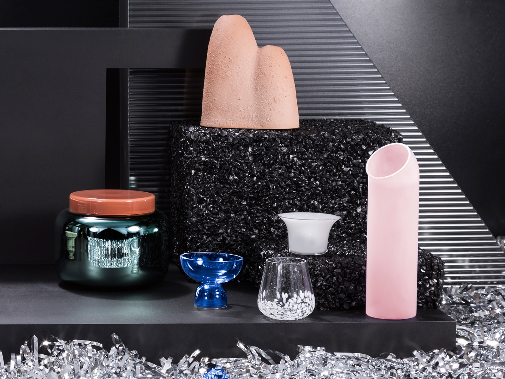

1. PULPO - Fabulously Awesome
Material joy combined with upcoming design stars in a pop-up that you wont want to miss. Pulpo always put on a fantastic show at Maison et Objet each year in Paris. They have long been on our radar for their inquisitive use of new materials and playful shapes. This collection, entitled the ‘Fabulously Awesome Tablescape’ or ‘FAT’ for short, looks set to be their best to date.
They will launch their first ever pop-up shop during LDF as part of the Shoreditch Design Triangle at 4 Garden Walk EC2A 3EQ and it runs from 15-24 September.
Fabulously Awesome by Pulpo, LDF

Fabulously Awesome by Pulpo, LDF
Container by Sebastian Herkner for Pulpo
Container by Sebastian Herkner for Pulpo
2. Design Frontiers at Somerset house - The new biggy
This big new show in the iconic setting of Somerset House has got some stiff competition from the more established shows, but its line up is very classy and it looks set to be a game changer.
It’s always good to see something new and anything that aims to push boundaries and challenge minds is fine by us. With new concepts on show from some of the best the world has to offer we think this has the potential to take LDF to the next level at a time when the world is watching us.
Seb Cox will be exploring ‘Grown Furniture’ with collaborator, Ninela Ivanova, in their experimental new collection, ‘Mycelium +Timber’. Essentially fungi furniture – should be interesting. You can also expect to see textile legends, Kvadrat, collaborating with our friends BCXSY (amongst others) for ‘My Canvas’ as well a new tech concept, Nolii, by forward thinker, Benjamin Hubert of Layer Design.
Design Frontiers, Somerset House, 18th-24th September 2017.
Sebastian Cox - Mycelium + Timber 'Grown Furniture'
Sebastian Cox - Mycelium + Timber 'Grown Furniture'
3. Dimore Gallery x Mazzoleni - Interior Portals
One of our all time favs, Dimore, have come to London for a show that lets you peep through portals into their beautiful otherworldly interiors.
If you follow us, you will need no intro to their work, as we have sung their praises before, but now you can see for yourself. You want regret a trip to this for some intense interior inspiration, full of rich colour and pattern.
‘(Un)Comfort Zone, 5-24 September 2017, 27 Albermarle St, W1S 4HZ
Dimore Studio x Mazzoleni
Dimore Studio x Mazzoleni
4. Fredrikson Stallard - The Masters
This design duo straddle the Art and Design worlds in the most beautiful way and are set to steal the show this year. The ‘Intuitive Gestures’ exhibition is at David Gill Gallery (2-4 King St, London) from 13th-28th of September. If their show a couple of years ago, featuring their iconic blood red meteor-like armchair, is anything to go by, this will be a stunner.
Fredrikson Stallard at David Gill
Fredrikson Stallard at David Gill
5. USA Pavillion - Design Exchange
The transatlantic exchange has been strong in other creative endeavours, like the west end and broadway for example, now that exchange has finally made it to Design, as the USA pavilion opens at London Design Fair. Curated by social media giants, Sight Unseen, this should be a stunning show, if our trip to New York earlier this year is anything to go by.
Featuring so many of our absolute favourites that you simply must not miss, including Steven Haulenbeek, (hot as well as very talented), Eric Trine (long term design crush on insta) and glass wizard, John Hogan, (see pic) amongst many others. If you followed our trip to New york and loved what you saw, then this is your chance to see some of the best American design in person.
London Design Fair, Old Truman Brewery, Brick Lane, 21-24 Sept 2017.
John Hogan at USA Pavillion for London Design Fair
John Hogan at USA Pavillion for London Design Fair
6. Adam Nathaniel Furman - The one to watch
Our pal, the talented designer and writer, Adam Nathaniel Furman is hitting his stride in a big way this year with a huge installation, ‘Gateways’ at Design Junction in King’s Cross, that offers a playfully patterned portal into the future of design. His other big show this year looks to the classics and is set in the stunning Soane Museum. There he will show his ceramic work, The Roman Singularity.
These pieces look set to become collector’s items and offer us a new way forward in design that holds onto our classical roots whilst thrusting us forward. Not to be missed. His design perspective is bold and fresh and not everyone’s cup of tea…yet, but it will be.
The Roman Singularity - Adam Nathaniel Furman
The Roman Singularity - Adam Nathaniel Furman
Adam Nathaniel Furman
Adam Nathaniel Furman
7. Giopato & Coombes - Italian lighting legends
Another opportunity in London to see a design duo that we have long admired on our many trips to Milan Design Festival. This lighting team create exquisite works of ornamental function that we have been lucky enough to feature in our interiors work.
When you see the pieces in the flesh you cannot help but be bowled over by their quality. Catch them at the top of their game at Viaduct London in Clerkenwell Design Quarter as part of ‘Punctuating Spaces’.
giopato & coombes
giopato & coombes
9. Dan Schofield - Rising Brit Talent
We first met this handsome and very talented designer at Design Junction last year and have since found ourselves falling in love with all of his new pieces. We are even using some of his lights in our latest interior design project for a client in Waterloo, so look out for that.
It’s not often that a new star of the design scene begins to break through. Watch out for Dan Schofield, because he means business. With his Bulk light for Decode showing at Design Junction and his gorgeously tactile new Mags tables showing at Conran, we think he is about to have a moment and we couldn’t be happier for him.
Bulk lights by Dan Schofield for Decode (photo by 2LG)
Bulk lights by Dan Schofield for Decode (photo by 2LG)
Dan Schofield - Mag tables (enamelled volcanic stone)
Dan Schofield - Mag tables (enamelled volcanic stone)
10. South East Maker Trail - 2LG Studio x Custhom
We are at it again with our long term collaborators, Studio Custhom, as we launch our Forest Hill collection in London for the first time, after a successful launch in New York earlier in the year.
Last year, the South East Maker Trail was in it’s infancy as it blazed a trail for design in our home turf, South East London. We were so thrilled to see LDF making it to our neck of the woods that we had to get involved this year. So we are doing an interactive installation at The Nines bar and restaurant in Peckham’s busy Bussey Building. It will be site specific and we will be there on the last Sunday of LDF to have a beer with you and enjoy the Design Pub quiz.
We will also be creating an interactive Cafe and Print works for Design Junction in King’s Cross, where you can take away your own unique artwork, hand screen printed by one of our team, based on our collection.
This year is going to be epic and we are so thrilled to be a part of it. Please say hi if you see us on the circuit and we hope you enjoy some of these, gems. Get inspired!
2LG x Custhom at the nines in Peckham, South East Maker Trail
2LG x Custhom at the nines in Peckham, South East Maker Trail


 The best of Milan Design Week
The best of Milan Design Week Madeover – Before and After
Madeover – Before and After Design led travel
Design led travel Ercol x 2LG – Loveseat
Ercol x 2LG – Loveseat